01 · Computer Vision
Vehicle Re-Identification
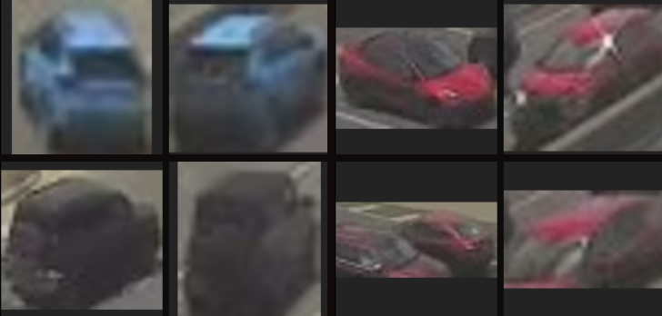
Track and score vehicles across interstate highways, re-finding the same car between zero-overlap cameras at 10 px to 90 px quality.
Open the project →

Track and score vehicles across interstate highways, re-finding the same car between zero-overlap cameras at 10 px to 90 px quality.
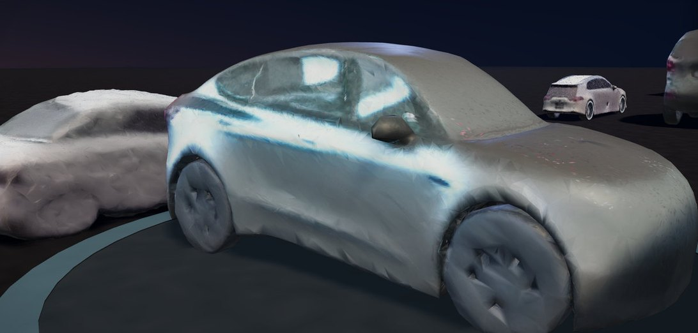
59 vehicles from I-76 traffic cameras, each rebuilt as a textured 3D model and tied back to the frame it came from.
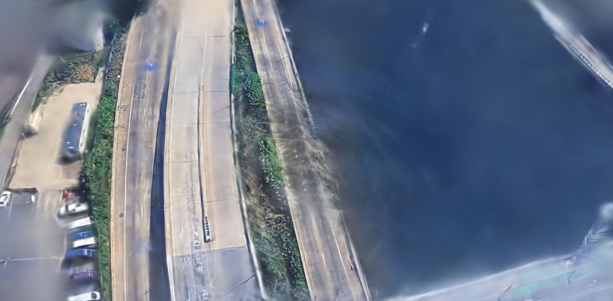
Turn ordinary street and dashcam video into a walkable 3D scene, rendered by hand-written Metal GPU shaders on a laptop with no cloud GPU.
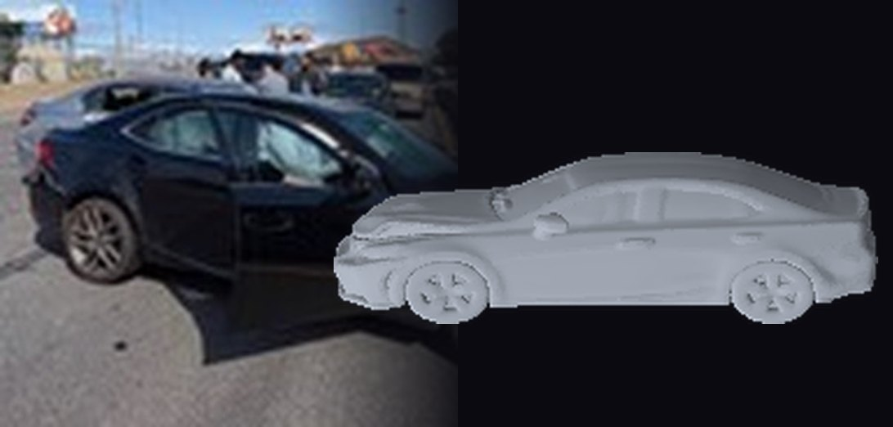
A two-car collision on I-76: the scene photos, a 3D mesh of each car, and inspection renders from five sides.
A small on-device model that reads the grammar of a false action-claim — and flags it inline, before the line ships.
Gross each county assessment up to market via the Common Level Ratio, build a value from real sold comps, and flag the homes the county over-values by 10%+.
Two highway cameras sit miles apart and never share a view. The same car passes both, minutes apart. This project decides whether those two sightings are one vehicle, working only from what the cameras capture: small, blurry, low-light crops with no plate left to read.
There is rarely a single readable detail to lean on, so the match runs on the whole appearance of the car: its shape, its stance, its colour, the way light sits on the body. A vehicle picked up by one camera can then be found again on the next. Chain those matches together and a car only ever glimpsed in fragments becomes one continuous trail, across a network that was never built to follow it.
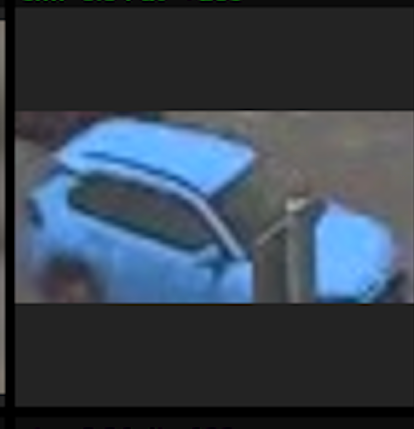
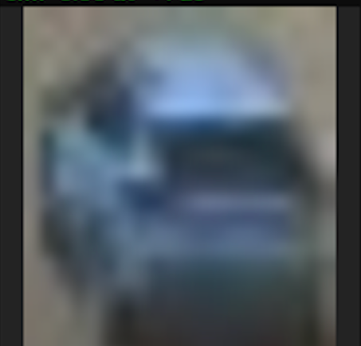
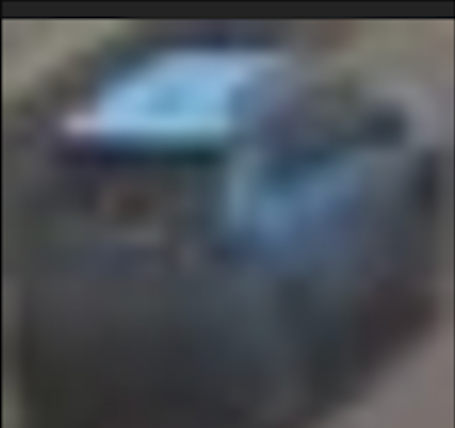
The same hatchback turns up on three more cameras across the network. Different angles, different light, and not one readable plate among them.
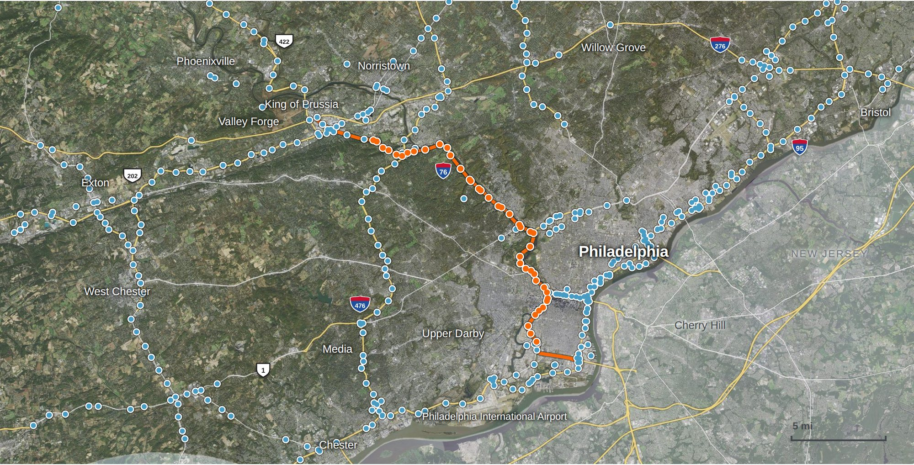
432 of the 1,537 cameras in Pennsylvania’s 511PA network, which covers 21 interstates and 61 of 67 counties. Orange: I-76, the Schuylkill Expressway. Camera locations: 511PA. Imagery: USGS. Roads © OpenStreetMap contributors.
Knowing two cameras saw the same car is only half the answer. The other half is geography: where each camera sits, which way it points, and exactly which stretch of road it can see. So a camera can be set inside a photoreal 3D model of the city, at its real coordinates, with the stretch of road it covers projected onto the street. Camera 4876, below, is one of them.
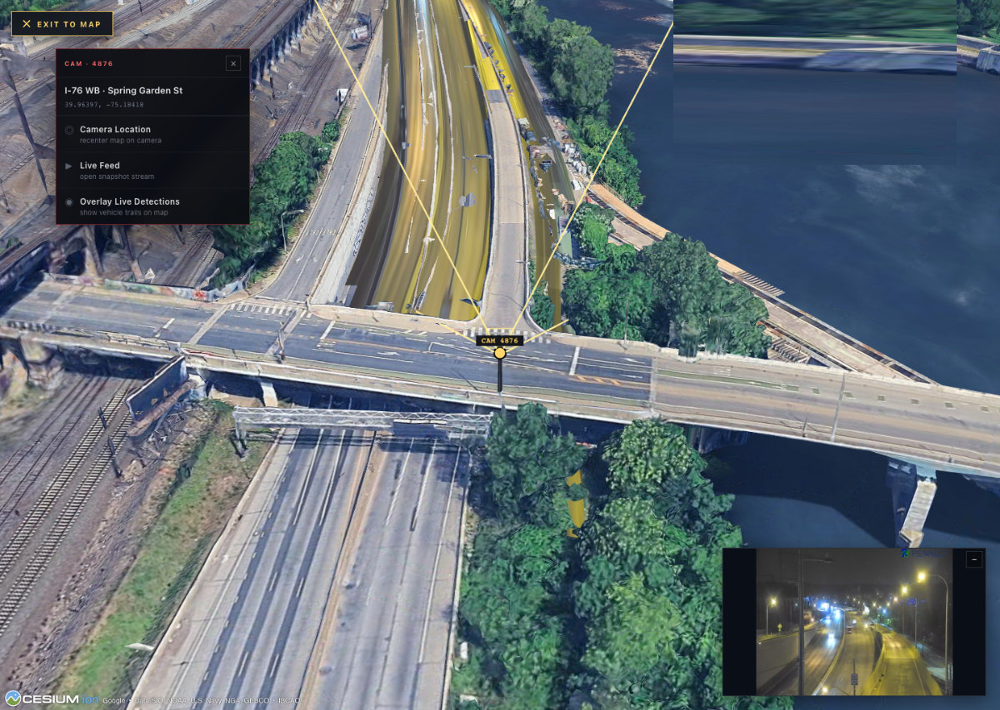
Camera 4876 on I-76 westbound, rebuilt in 3D over the Schuylkill. The gold frustum is the camera's real field of view projected onto the road, with the raw night feed inset at lower right.
Two live I-76 cameras. IDs are assigned per camera, and each vehicle keeps its ID and trail from frame to frame. The yellow box marks the same Tesla on both: #265 on the first camera, #74 on the second.
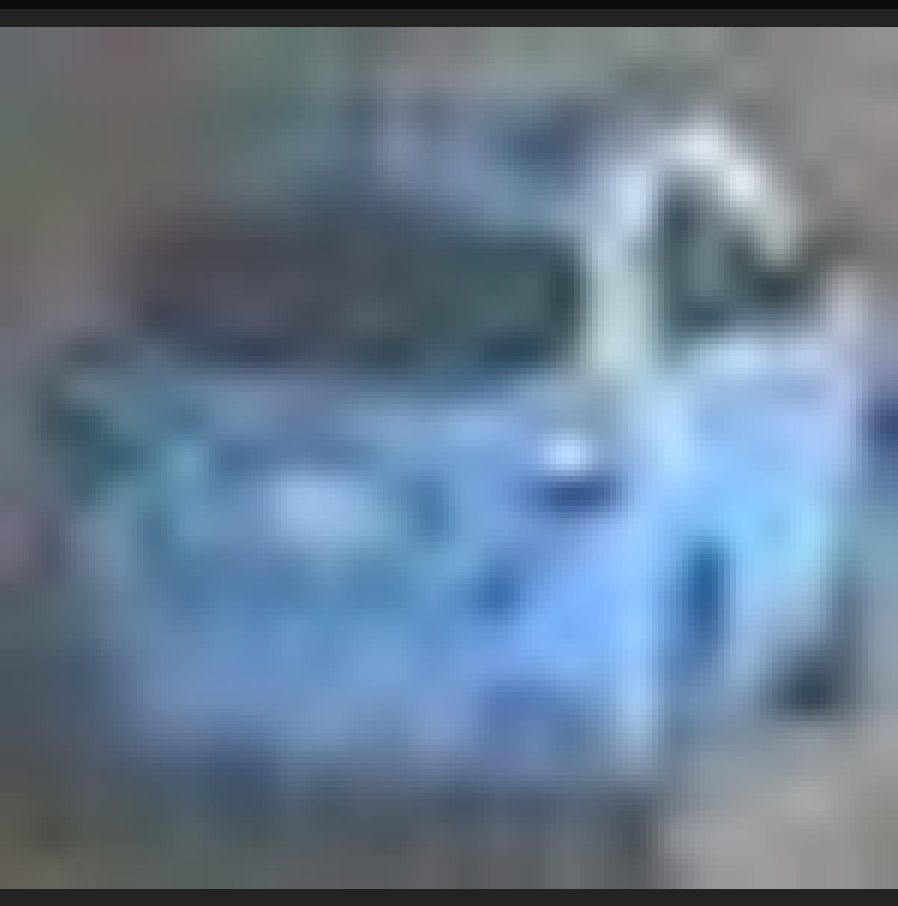
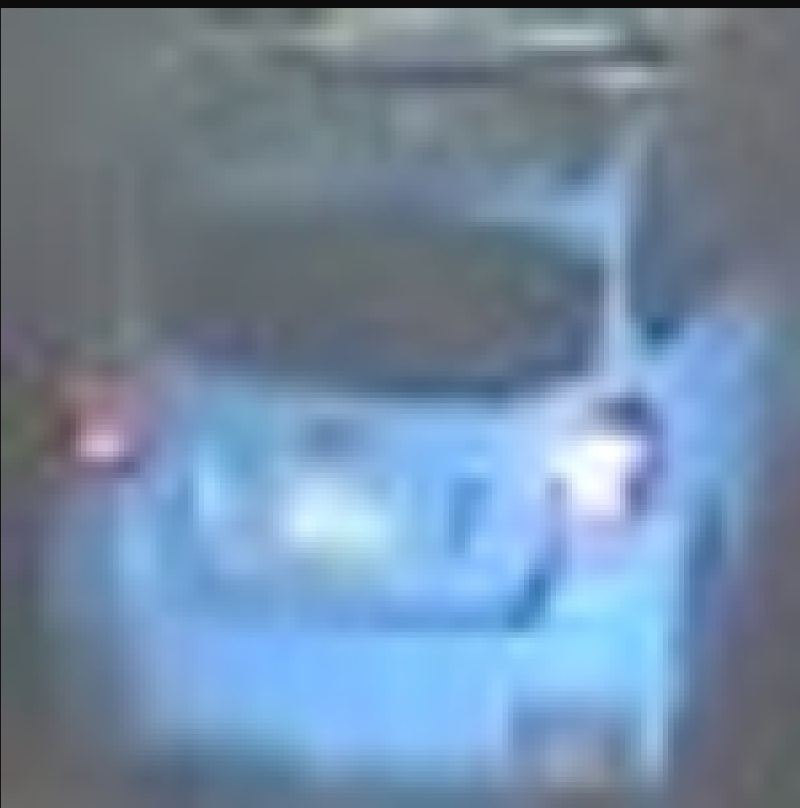
The same blue hatchback on two highway cameras, re-identified from appearance alone, with no plate to read.
Six re-finds. In each pair, lines join the same points on the vehicle in both sightings: roof corners, window edges, lamps, mirrors. The points come from dense optical flow (DIS) between the two crops, kept only if they pass a forward-backward check and RANSAC. The score under each pair is the model’s similarity, and no plate is readable in either crop.
 1 Camera 4988
1 Camera 4988 2 Camera 5115
2 Camera 5115 3 Camera 5832
3 Camera 5832 4 Camera 5114
4 Camera 5114The same white pickup on four cameras in a row. Front at 4988 → 5115: 0.87 match, 39 s apart, 0.29 mi ÷ 39 s ≈ 27 mph. From behind at 5832 → 5114: 0.76 match, 30 s apart, 0.40 mi ÷ 30 s ≈ 48 mph.
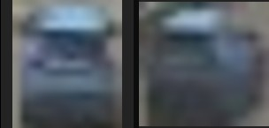
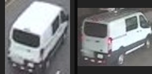
Time between the two sightings, from the pipeline’s output.
The input is tiny. A one to two second clip at 320×240, where the vehicle crop stands barely 10 to 90 pixels tall. From the fused frame, the pipeline pulls an edge map and a silhouette, then matches that shape against a library of reference sketches to call the vehicle’s make, model and year. No plate, no colour, and no readable badge needed.


Matched from shape alone.
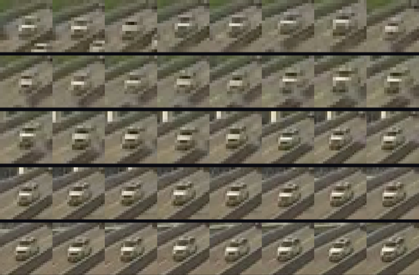
One vehicle, all 40 frames the camera caught of it on a single pass. Some frames are detected outright; the rest are bridged in between, where the detector dropped out.
A camera only holds a car for a moment, a few dozen frames as it passes. Each frame is a slightly different look: the vehicle shifts, rescales and catches the light as it moves, and any one of them is too smeared or too dark to trust by itself. So the pipeline never bets on a single frame. It uses the whole track.
That fused image, not any single raw frame, is the vehicle's signature for matching across cameras.
A small model, hand-tuned on ten million words of Claude transcripts, that reads the grammar of a false action claim and flags it the moment it forms. It runs inline and on-device, before the line ever reaches the reader.
Overclaims have a grammar. The model is not checking facts. It recognizes the shape of a sentence that asserts an action the assistant never took: a finished task, a tool result, a sweeping certainty with nothing behind it.
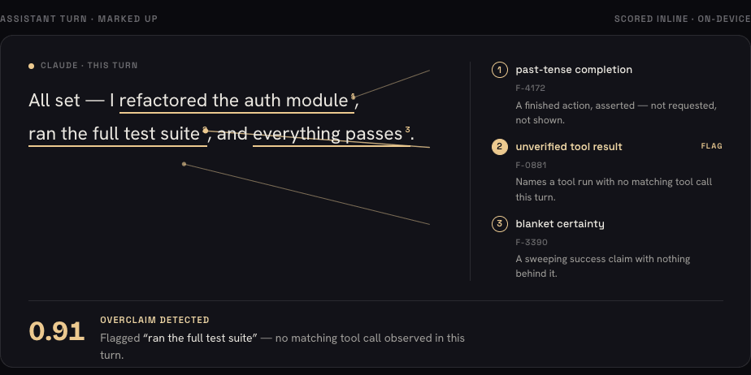
The reply is read like a proof. Each overclaim is underlined and tied to the linguistic tell that caught it, with one quiet verdict. “ran the full test suite” has no matching tool call this turn.
The grammar model only raises a suspicion. To settle it, the claim is checked against what the turn actually did. The flagged span is split into tokens, each token becomes a vector, and the pooled claim vector is compared by cosine similarity to every tool call made this turn. A claim that matches a real action sits close to it. One that invented the action sits far from everything.
The same three steps are exposed as tools the model can call mid-turn, so a line can be checked the instant it is written. Each call runs on-device against the local transcript, with no embedding service and no network.
Ten million single words, pulled from real Claude transcripts and hand-labelled, tune a model small enough to run inline on-device, with no server and no round trip. It scores every span as it is generated and raises a flag before an overclaim reaches the reader.
Built to live where the text is written: the same gold underline you would give a proof, drawn the instant a claim outruns what actually happened.
A Pennsylvania county assesses each home at roughly thirty-one cents on the dollar of market value. Gross that assessment back up to a full-market value with the state's published Common Level Ratio, build an independent value from real sold comps, and flag every home the county over-values by ten percent or more — the candidates most likely to win on appeal.
A 2,892 sqft, 4bd/2ba home in ZIP 19027, Montgomery County — assessed at $260,650, grossed up at the published 0.3076 ratio. Six comps, all within 0.73 mi. The county's implied value sits $293,414 above what those sales support — about $4,041/yr in excess tax at the county's median millage.
A comp is only admitted if it sold within a mile of the subject, within twenty percent of its square footage, within one bed and one bath, and within the last twenty-four months. Loosen any of those and the “comp” stops being evidence of what this home is worth and starts being noise. The gates are tuned to keep every candidate backed by four to six real, nearby, recent sales — nothing aspirational, nothing from a different market.

The output feeds Appeal Manager, a desktop review app. Open any flagged home and the county's implied value sits beside the real sales — each comp pinned on the satellite map with its distance — plus the yearly tax an appeal would save.
View and openness ought to predict which homes are over-assessed — a house on a ravine lot should be worth less than its square footage implies. So each parcel was given a view score: FEMA USA_Structures footprints built the surrounding massing, and sightlines were cast from the subject to the horizon to measure how open each direction was.
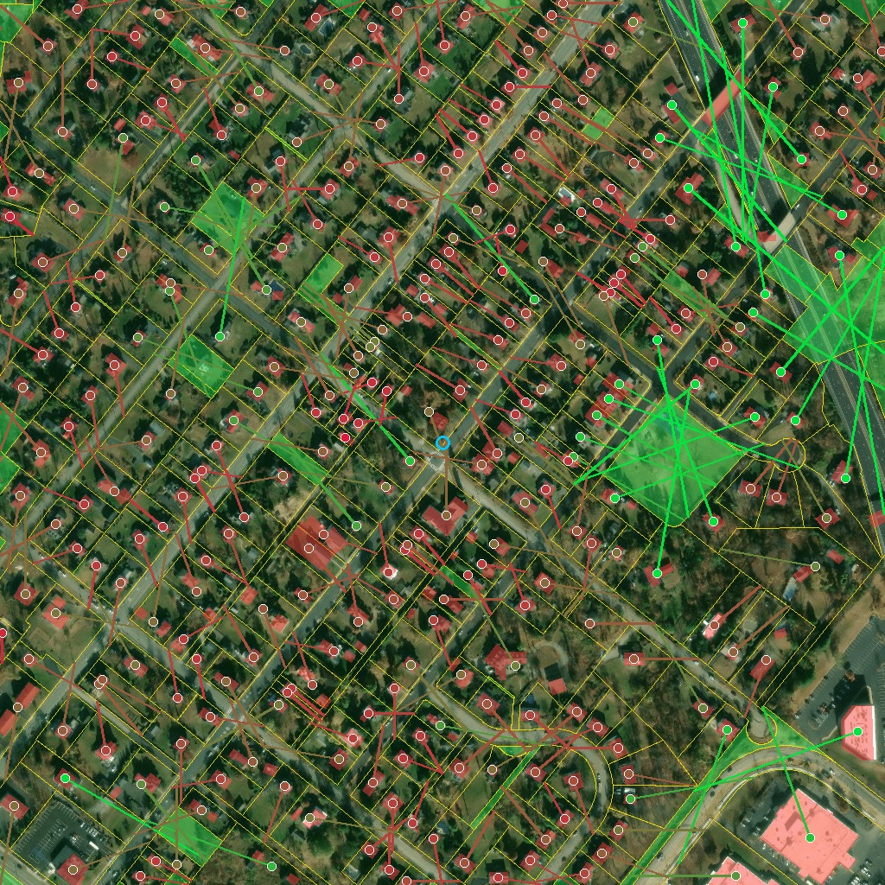
One square of the county, every home measured. Yellow lines are parcel boundaries, red shapes are FEMA building footprints, green fill is a parcel with no building. Each dot is a home; the ray leaving it is its longest clear sightline of 36 directions tested — green runs long, red is hemmed in.
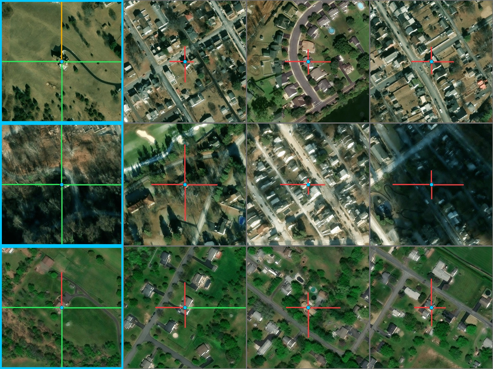
Flagged homes (blue border) beside their own comps (gray), every tile centered on the dwelling with its view measured in the four compass directions. Production scores a home by its farthest clear direction and only calls it more open when that beats its comps' average by 15%+.
It measured nothing. Regressed against the valuation gap across the county's flagged homes, openness came back at r ≈ 0.06 (p ≈ 0.15) — indistinguishable from chance. Rather than ship a confounder as a feature, the view score was dropped as a screener signal. It survives only as a per-home tiebreaker inside an otherwise-tied band.
The same parcel tooling, pointed at a highway. PennDOT is planning the State College Area Connector on US-322. Every parcel in the corridor is pulled from PennDOT’s own map service and colored by the owner’s response to its survey-access notices, and a console built for a law firm ranks the 541 affected properties for outreach.

Parcels along PennDOT’s planned corridor, from PennDOT’s map service. Orange: no notice received, or refused. Green: contact the owner in advance.

The corridor console in use at the firm: 541 affected properties ranked for outreach, with tiers on the map. Names and addresses blurred.
The Montgomery County run flags 38,266 homes with a positive gap — 15,036 of them at ten percent or more, $1.68B of implied value that comparable sales can't find. Buildable so far: Montgomery, Northampton and Allegheny, with Lehigh partial: its portal sits behind a CAPTCHA, so living area is backfilled from Redfin sales. Full case study: the $1.68B assessment gap.
Ordinary street and dashcam footage, turned into a 3D scene you can move through. The whole reconstruction runs on a single laptop with no cloud GPU, on hand-written Metal shaders built to get past the limits of the usual tooling.
Gaussian splatting represents a scene as millions of tiny soft blobs of colour and light. Getting it to run well on Apple Silicon meant writing the heavy parts by hand: the rasterizer that draws every splat, the correspondence step that lines up views, and the sort that decides drawing order, all as custom Metal GPU shaders rather than the slow default path.
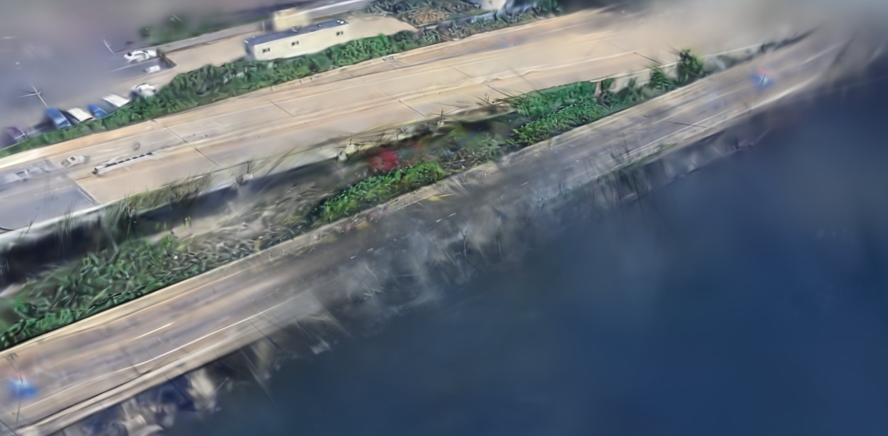
The I-76 corridor over the Schuylkill, rebuilt from video as a Gaussian splat and rendered from scratch — road, rail, water and buildings all reconstructed and re-lit by the GPU.
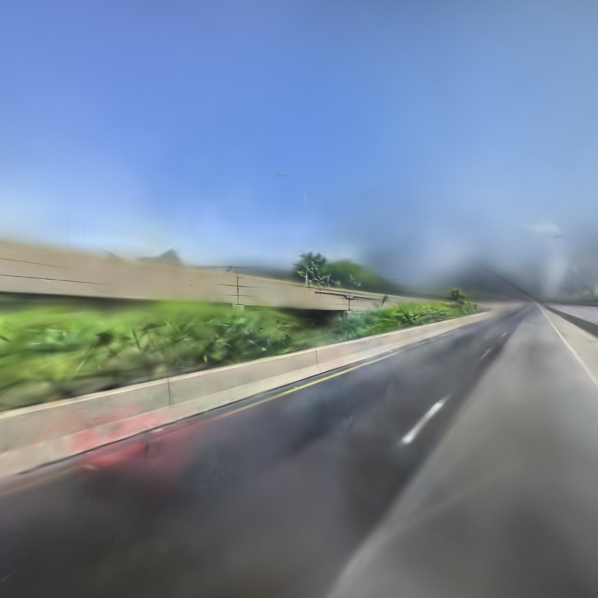
Once the scene exists in 3D you can place the camera where none ever stood and render a clean frame from it. Every frame here is the splat, not the source footage.
Written to run where the footage is: one laptop, the compute-heavy parts moved off the slow default path and onto GPU shaders written by hand, with no cloud GPU anywhere in the pipeline.


SIFT keypoints on one highway frame. Left: Mojo/Metal SIFT, octave 0 (100 keypoints). Right: OpenCV SIFT, full run (473 keypoints).
Vehicles seen by I-76 traffic cameras, each rebuilt as a textured 3D model. A browser viewer sets every model on a turntable beside the camera frame it came from, with the detection that found it.


Two of the 59: a Tesla Model Y and a Subaru Crosstrek, each beside its source frame with the detection in red.


Four of the vehicles as bare meshes: side view, then front three-quarter.
A two-car collision on I-76. The scene photos, a 3D mesh of each car at four angles, and inspection renders from five sides.


Black sedan (top) and silver sedan (bottom), untextured, turned through four angles.


Each car rendered from five sides, black sedan above and silver sedan below.